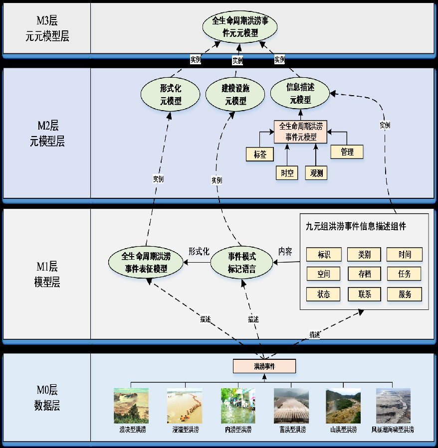
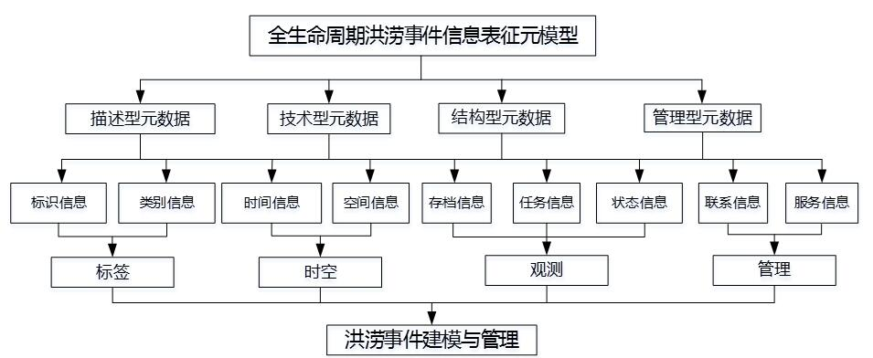
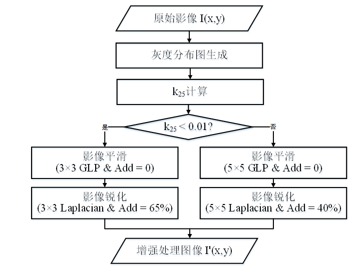
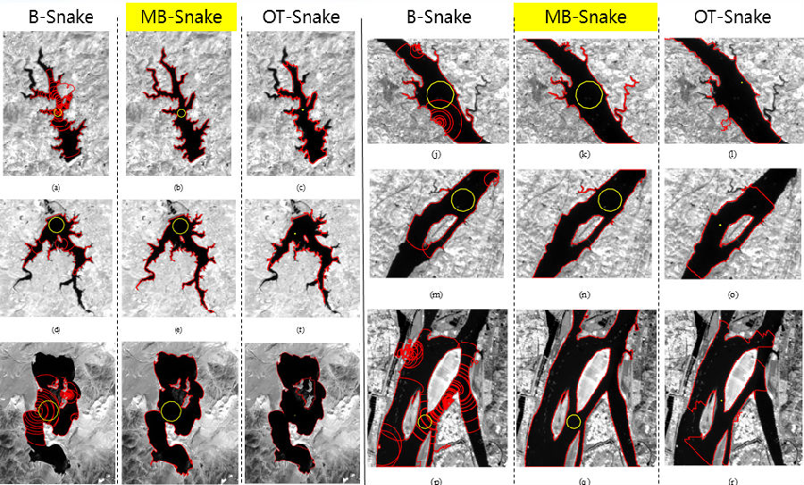
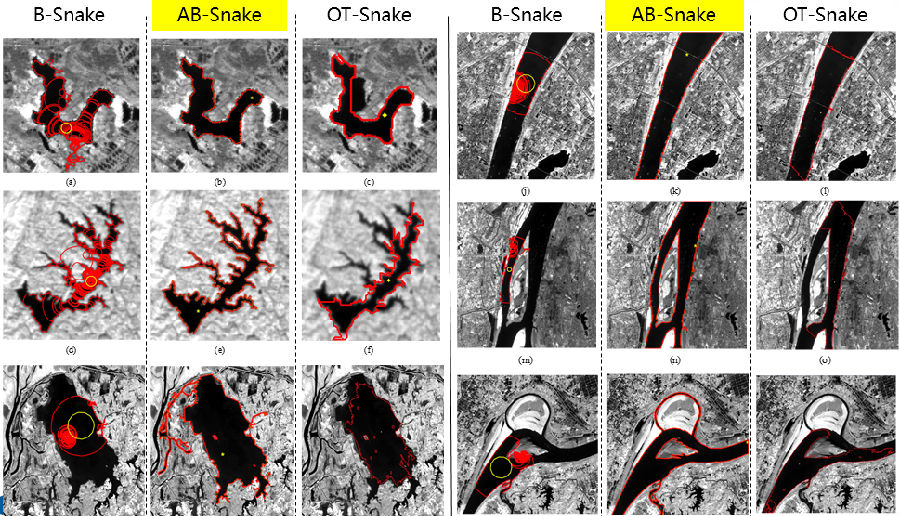
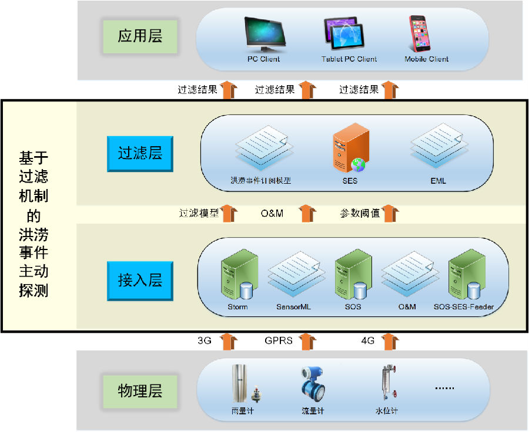
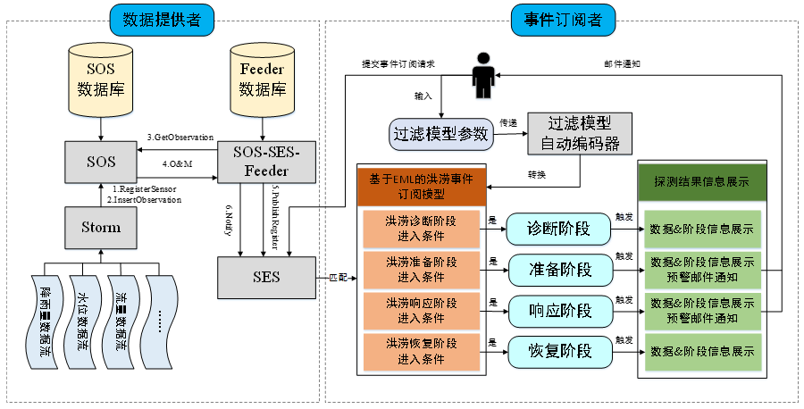
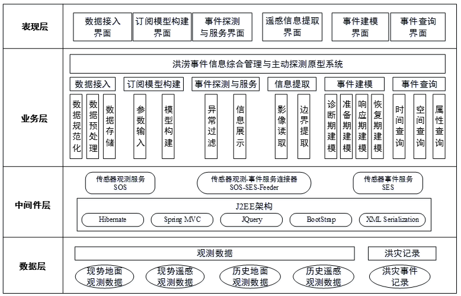

核心提示
洪涝事件的动静态信息共享、洪涝范围等关键因子的精确提取、提前探测与预警发布，能够辅助决策并降低洪涝事件损失，但现有研究尚不足以为其提供技术支撑。杜文英的报告在分析洪涝事件建模、洪涝范围提取以及洪涝主动探测方法现状的基础上，重点介绍了传感网环境下的洪涝事件全生命周期建模、拓扑自适应水体边界提取以及洪涝事件主动探测方法。
人物名片
杜文英，测绘遥感信息工程国家重点实验室2013级博士生，已在IEEE JSTARS和Remote Sensing等国际学术期刊上发表SCI检索论文4篇，获批国家发明专利2项，在读期间获得地球空间信息技术协同创新中心优秀学生奖学金和多次优秀研究生奖学金等，并且获得2017年“优秀毕业研究生”荣誉称号。
报告现场
6月9日19:30，测绘遥感信息工程国家重点实验室2013级博士生杜文英做客GeoScience Café第166期学术交流活动，分析了洪涝事件建模、洪涝范围提取以及洪涝主动探测方法现状，重点介绍了传感网环境下的洪涝事件全生命周期建模、拓扑自适应水体边界提取以及洪涝事件主动探测方法，并分享了自己今后的研究计划。
洪涝事件信息建模与主动探测研究现状
报告就OGC事件标准、灾害通用和专用标准、灾害事件信息模型、现有边缘检测算法以及洪涝事前发现方法等，分析了目前国内外洪涝事件信息建模与主动探测的研究现状。
现有的灾害通用标准存在仅具备预警功能，或只给出描述框架而没有具体内容的缺点，而专用标准普遍存在不具备跨越特征，无法推广应用到洪涝监测领域的应用局限。而近年来提出的灾害事件信息模型存在表征动态信息失效、注重架构忽略内容、忽略洪涝类型与差异、适用性差等缺点。并且目前现有的边缘检测算法仍旧难以兼顾运算效率与检测精度。另外，三种洪涝事前发现方法分别有着基于概率预测误差大、遥感数据源分辨率较低、系统通用性和扩展性差等缺点。
基于以上的研究现状，报告中的方法将实现以下三个目标：（1）针对洪涝事件特点，分析洪涝事件动静态信息表征需求，基于元对象机构的MOF框架建立面向观测的洪涝事件全生命周期信息表征元模型；（2）分析影像灰度特征，基于气球Snake模型，提出具备拓扑自适应性的水体边界精确提取方法，实现洪涝范围的精确提取；（3）分析洪涝事件致灾因子，基于传感器观测服务SOS、传感器事件服务SES和过滤器编码FE等提出传感网环境下洪涝观测数据的统一接入和异常过滤，实现洪涝事件全生命周期的主动探测。
面向观测的全生命周期洪涝事件元模型（FLFM）
面向观测的全生命周期洪涝事件元模型是基于MOF架构的四层元建模框架（图1），下层是对上层的抽象，上层是对下层的实例化，主要内容是九元组元模型（图2）。九元组元模型分为标签、时空、观测和管理四大构件以及标识、类别、时间、空间、存档、任务、状态、联系、服务九大组元。而洪灾任务库包括诊断期、准备期、响应期和恢复期四大阶段。降雨量作为洪涝事件的最主要的致灾因子，其监测的知识库来源于遥感数据集，而当新的卫星发射或者有新的方法提出，洪灾任务库和知识库都可以进行相应地扩展。洪涝事件元模型的UML图是在九元组洪涝事件元模型以及洪灾任务库和知识库的基础之上，进一步进行元素的分解和细化形成的，涵盖了洪涝事件名称、ID、描述、时空范围、类别、观测任务以及状态等多个元素项。FLFM模型实现了全生命周期动态观测信息的统一表征，且能够辅助洪涝事件应对过程中的观测任务分解，并能够辅助用于观测任务应对的遥感数据查找，成功完成了其设计目标。


洪涝范围精确提取
基于气球Snake模型，报告提出了用于曲线分裂与合并的MB-Snake模型和自动化根据空洞个数初始化的AB-Snake模型。
在进行曲线分裂与合并之前，需要检测拓扑冲突，如果轮廓中存在邻边共线且反向或非邻边相交的情况，则认为有拓扑冲突存在，通过线段相交与否的判断可以实现拓扑冲突的检测，通过线段的打断和重连则可以实现拓扑冲突的处理。由于影像间存在灰度值差异，报告提出了自适应影像预处理的方法（图3）来分别处理高低灰度对比度的影像，同时提出的轮廓迭代自动终止机制可以解决B-Snake模型所面临的弱边界溢出以及无法自动终止迭代的问题。以GF-1 WFV数据为例比较了B-Snake、MB-Snake和OT-Snake三种方法的边缘检测结果（图4）。B-Snake提取结果中内部出现了大量冗余轮廓，而OT-Snake对节点运动有限制，不能提取低于一个像素的轮廓。MB-Snake算法参数设置稳定，但也存在一定的局限，不能有过于严重的噪声影像；对于同一水体来说，空间分辨率越高，提取效果越好，但消耗的时间也越长；与可见光相比，近红外波段提取效果较好。
AB-Snake算法能够实现自动初始种子点选取和自动生长阈值确定。同样以GF-1 WFV数据为例，比较了B-Snake、AB-Snake和OT-Snake三种方法的边缘检测结果（图5），结果类似，B-Snake内部会出现了大量冗余轮廓，而OT-Snake由于节点限制，不能提取低于一个像素的轮廓。AB-Snake算法具有阶段灵敏性，只要初始轮廓不超过真实的目标水体边界，总能继续进行轮廓迭代直至获得正确的水体边界。



洪涝事件主动探测与预警服务方法
报告结合传感器观测服务（SOS）和传感器事件服务（SES），提出了涵盖物理层、接入层、过滤层和应用层的四层架构（图6）。其中接入和过滤模块为重点（图7），接入模块主要负责实时接入洪灾相关地面传感器观测数据，过滤模块负责预置洪灾过滤模型，接收外部提供的过滤模型参数，将过滤模型转换为订阅模型，然后基于订阅模型实现数据过滤和洪灾事件探测。过滤模型中阈值采用了江西省十几个站点十年内的数据得到的经验值。
主动探测服务方法具有以下三个特点：（1）将洪涝事件分为四个阶段并能够准确界定洪涝事件当前所处阶段，便于根据事件的阶段提供相应服务；（2）能够提前主动探测到洪涝事件的发生，避免或减轻洪灾损失；（3）服务方法中的过滤模型可扩展，各阶段服务可扩展。


洪涝事件综合管理与主动探测原型系统及研究展望
洪涝事件综合管理与主动探测原型系统的总体框架（图8）包括表现层、业务层、中间件层和数据层四层架构，以及洪涝探测、范围提取和洪涝建模等功能模块。报告中以梁子湖为例，展示了洪涝事件综合管理与主动探测的流程与实验效果，包括水位数据实时接入、洪灾订阅模型构建模块、洪灾事件主动探测及邮件通知、洪涝范围提取结果对比、洪灾事件建模与查询，验证了该方法的可行性和有效性。
最后，由于报告中方法仅给出了漫溢型洪涝事件的任务库和知识库，下一步将为其他类型的洪涝事件构建任务库和知识库，实现异构洪涝事件的统一建模和集成管理；同时考虑去除云覆盖对遥感影像的影响，并尝试提出能够适用于多目标水体边界同时提取的方法；未来将从整个流域的角度出发进行过滤模型的构建，并尝试增加洪涝事件不同阶段中的服务类型，提高探测方法的影响范围和服务多样性。

互动交流
观众A：谢谢杜师姐的精彩报告，我现在有两个问题：第一，第一部分你提到的洪涝事件元模型的完备性是如何评价，如何论证元模型足够覆盖洪涝信息表征里面的特征元素？第二个问题是解释一下气球Snake模型中参数稳定性。谢谢！
杜文英：首先完备性，没有几个模型能够完全覆盖所有信息，而随着技术的进步，以前不能获取的数据，现在可以进行添加，所以前面的观测部分是可以扩展的，也就是具有扩展机制。然后关于静态属性是经过调研后继承前者的。最后是参数稳定性，首先利用matlab设定初始变化范围，在该范围内进行参数变化实验，将实验结果与参考边界（参考影像、往年同期值或者临近值）进行对比得到其正确率，以确定参数正确性。
观众B：杜师姐好！您提出来的Snake是应用与高分影像，有没有在其他影像上试验过，比如SAR影像？或者说应用于SAR影像，您有什么观点？
杜文英：Snake模型最早是来源于计算机图形学，最多应用于医学影像的分割。在我的实验中确实没有运用在SAR影像中，但是用在不同分辨率的影像上，比如用在了Landsat7和Landsat8 30m影像和GF-2 4m的影像中，都是测试光学影像。它的基本原理是有一条曲线，赋予了这条曲线一个函数，由于存在灰度差，会通过一个力的作用进行移动，就其原理，我觉得在SAR影像上是可以适用的。
观众C：你好！我发现你是利用原来影像来提取边界的，而影像是栅格数据，拓扑关系是描述的矢量数据，这个栅格转矢量，你是如何处理的？还有如果遥感影像中出现薄云，能够继续适用？传感器网需要布置多少传感器，布置时是如何考虑的，如果换到另一个城市是否适用？
杜文英：我是把它的每个轮廓都变成了多边形，即先赋予初始点，通过节点移动使得多边形最大化地近似于轮廓。根据现有去除云算法可以有效的去除光学影像中的云污染，然后再运用这个算法即可。分析以往的洪涝数据，发现水位是具有一定的规律的，也就是可以根据多年数据，可以设置经验阈值，相同的方法可以运用于其他城市，但是参数设置会不一样。
观众D：你好！我刚刚看你的MB-Snake模型，发现实现复杂度较高,改进的时候可不可以运用多个函数去逼近，而不是采用一刀切的方式，采用同一个函数去逼近？
杜文英：分阶段考虑是可以的，但是阶段如何划分比较复杂，所以之前设想过但没有实施。